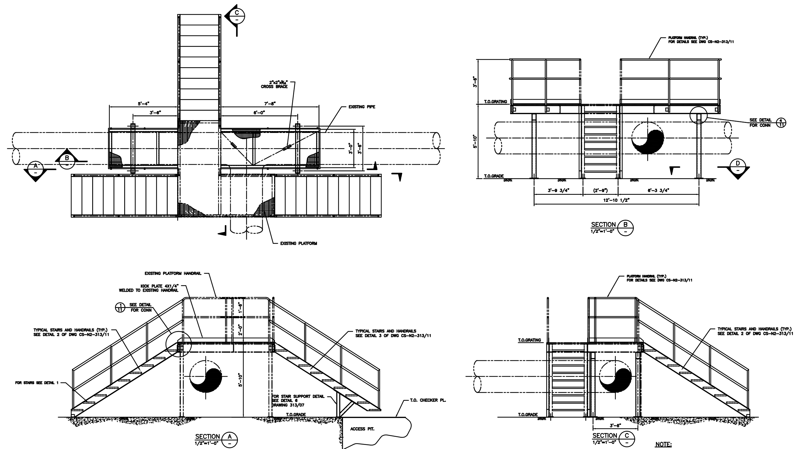

Silver Creek Design was born out of an entrepreneurial spirit. It is a Vancouver based design and drafting company owned by Gerrit Zwiep who has gathered over forty years of experience working for and hand in hand with some of Canada’s most astute Consulting and Engineering Firms.
Gerrit has gained experience in all the relevant industries. Pulp and Paper, Petrochemical, Oil and Gas, Mining and Oil Sands.
Silver Creek Design promises to be honest, up-front, innovative and imaginative and will deliver a sustainable design solution. Gerrit Zwiep is professional and has a “let’s get it done right” attitude, one of his principles and beliefs is “keep it simple”.
To complement his background, Gerrit has filled the position of a maintenance planner, scheduler and supervisor.
